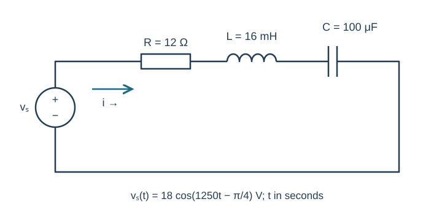
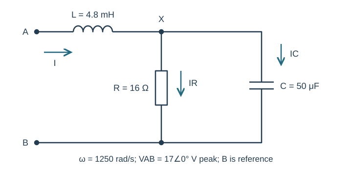
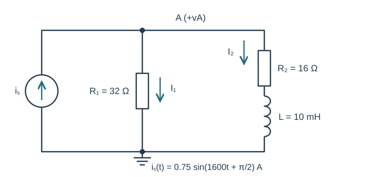
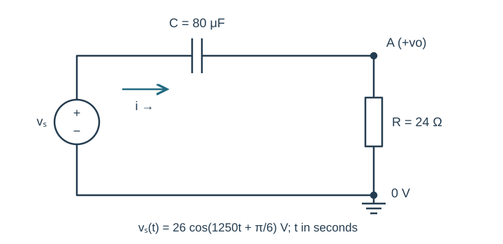
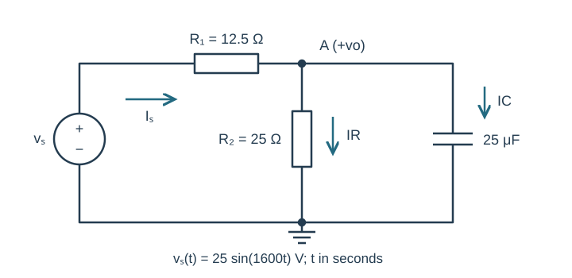

Course practice / Batch 15 / 2026-10-12 PDT
ENGR 202
正弦、相量与阻抗
Sinusoids, phasors & impedance · 第 15 组：HW 1 风格 5 题 + HW 2 风格 5 题
Interpret a sine with a negative coefficient
The voltage is \(v(t)=-6\sin(800\pi t-\pi/3)\;\mathrm V\), with t in seconds.
- Find the positive peak amplitude, angular frequency, frequency and period. Convert to a positive-amplitude cosine and give its peak phasor.
- Find v(0), the first downward zero crossing, first minimum, and first positive maximum at or after t=0. Give event times in ms.
- Sketch one complete period on labeled axes and mark all three events in time order. Explain why the coefficient −6 is not a negative peak magnitude.
中文提示（不含解答）
负号可用半圈相位变化吸收；把表达式统一成正振幅余弦再找时刻。
An advance followed by a larger delay
Let \(x(t)=4\cos(1500t+\pi/4)\;\mathrm V\), \(y(t)=x(t+\pi/6000\;\mathrm s)\), and \(z(t)=y(t-\pi/3000\;\mathrm s)\).
- Find the period and both stated time shifts in ms and as fractions of the period. Describe each shift as an advance or delay.
- Write y(t) and z(t) as positive-amplitude cosines and give all three cosine-reference phasors. Find the single net time shift relating z to x.
- Compare x,y,z at t=0 and t=π/3000 s. Draw the three phasors to scale and label their angles.
中文提示（不含解答）
先逐次代入时间变量，再化简总相位；第二次移动是作用在 y 上。
A third-quadrant product and a first-quadrant quotient
Let \(a=-4+j3\) and \(b=2+j5\).
- Compute a+b, ab, a/b and 1/b in rectangular form.
- Convert a,b,ab and a/b to polar form, with positive magnitudes and phases in (−180°,180°].
- Verify (a/b)b=a and b(1/b)=1. Plot a and b with equal axis scales, and use the rectangular signs to check product and quotient quadrants.
中文提示（不含解答）
相位要用 atan2 或结合象限判断；先保留分数可以减少舍入误差。
Subtract a cosine from a shifted sine
The voltage is \(v(t)=9\sin(600t+\pi/3)-4\cos(600t+\pi/3)\;\mathrm V\).
- Convert both written components to cosine-reference phasors. Show the subtraction as a rectangular sum, with the minus sign included exactly once.
- Find the combined peak magnitude and principal phase, then write one positive-amplitude cosine. Check the original and combined forms at t=0 and t=π/1200 s.
- Draw a tip-to-tail diagram with equal real/imaginary scales. Explain why the two written phase constants being equal does not make their phasors point in the same direction.
中文提示（不含解答）
相同的书面相位不代表正弦与余弦相量同向；正弦需要额外减去 90°。
Choose a phase that leaves a positive imaginary result
Let \(v(t)=6\cos(750t)+10\cos(750t+\phi)\;\mathrm V\), with \(\phi\) restricted to (0°,180°). Choose phi so that the total cosine-reference phasor is purely imaginary with positive imaginary part.
- Write the total real and imaginary components in terms of phi. Find phi in degrees to three decimals and explain why the stated interval selects a unique answer.
- Find the resulting phasor and express v(t) as a positive-amplitude cosine and as a signed sine. Check v(0) and v(π/1500 s).
- Draw the component and total phasors to scale. Verify that the second component retains its specified magnitude after the real component cancels.
中文提示（不含解答）
未知量是相位；实部抵消后，还需要用给定角度范围选择虚部正号。
An inductive loop produces a negative imaginary current
The source \(v_s(t)=18\cos(1250t-\pi/4)\;\mathrm V\) drives series R=12 Ω, L=16 mH, C=100 μF. Current is clockwise from the source positive terminal. Each element voltage is a passive drop along that direction.
- Copy the time-domain circuit and draw its impedance version, including source phasor. Find ZL,ZC,total Z and I in rectangular/polar form.
- Write steady-state i(t). Calculate VR,VL,VC and verify KVL. State the current phase relative to the source.
- Predict i(0) and i(π/2500 s). For optional LTspice, provide source frequency in Hz and sine-source phase, then compare these phase positions in a settled cycle with units, appropriate scales and two cursor readings.

中文提示（不含解答）
源相位与阻抗相位都要保留；从源相位减去阻抗相位得到电流相位。
An input inductor precedes a parallel RC block
At ω=1250 rad/s, terminal A connects through L=4.8 mH to node X. R=16 Ω and C=50 μF each connect X to terminal B. B is reference. Apply VAB=17∠0° V peak. Input current points A to X; branch currents point X to B.
- Draw the impedance circuit. Reduce the parallel block and then the input impedance ZAB, giving the latter in rectangular and polar form.
- Find input current, VX, resistor current and capacitor current, all as complex phasors.
- Find the inductor drop from A to X. Check KCL and VAB=VL+VX, and state whether input current leads or lags the applied voltage.

中文提示（不含解答）
输入电感在并联块之外；总输入阻抗与节点电压所对应的阻抗不要混淆。
A cosine-equivalent current drives two unequal branches
The source \(i_s(t)=0.75\sin(1600t+\pi/2)\;\mathrm A\) injects current upward into node A. One A-to-ground branch is R₁=32 Ω. The other is R₂=16 Ω followed by L=10 mH in series. Define vA positive at A, and both branch currents downward.
- Copy the circuit and draw the impedance version. Convert the source to a cosine-reference peak phasor; find branch impedances, total admittance and equivalent impedance.
- Find VA in rectangular/polar form and write vA(t). Compute both branch-current phasors and verify KCL.
- Predict vA(0) and vA(π/3200 s). State the voltage phase relative to the source current; optionally compare both samples after transients settle in a simulation, with reference directions and units.

中文提示（不含解答）
串联 RL 分支先求整体阻抗，再求该分支导纳；源的正弦表达式也要转换。
Measure the resistor after a series capacitor
The source \(v_s(t)=26\cos(1250t+\pi/6)\;\mathrm V\) connects through C=80 μF to node A. R=24 Ω connects A to ground; the source negative terminal is grounded. Current is clockwise from source through C and R. Output vo=vA−Vground is positive at A.
- Draw the impedance circuit. Find input impedance and I, then use an impedance divider to find Vo in rectangular/polar form.
- Write vo(t). Calculate the capacitor drop VC along the current direction and verify Vs=VC+Vo. State whether output leads or lags the input.
- Predict vo(0) and vo(π/2500 s). Explain why the output amplitude is not 26 V even though the resistor is the only dissipative element in this ideal circuit.

中文提示（不含解答）
电容仍有非零相量压降；分压的分母是整个串联阻抗。
A sine source supplies a loaded RC divider
The source \(v_s(t)=25\sin(1600t)\;\mathrm V\) connects through R₁=12.5 Ω to node A. R₂=25 Ω and C=25 μF each connect A to ground. Output vo is positive at A. Source current flows through R₁ toward A; load currents are downward.
- Draw the impedance circuit with source phasor. Find the parallel load impedance, total input impedance and source current.
- Find Vo in rectangular/polar form and write vo(t). Compute the load currents and R₁ drop, then check KCL and KVL.
- Predict vo(0) and vo(π/3200 s). For optional LTspice, give frequency in Hz and sine-source phase; compare both values in a late steady-state cycle with reasonable scales, units and cursor readings.

中文提示（不含解答）
输出相量位于第三象限时，主相位应为负角而不是直接取反正切的锐角。